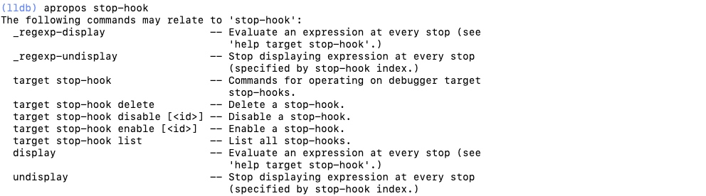

<!DOCTYPE html>
<!--[if IEMobile 7 ]><html class="no-js iem7"><![endif]-->
<!--[if lt IE 9]><html class="no-js lte-ie8"><![endif]-->
<!--[if (gt IE 8)|(gt IEMobile 7)|!(IEMobile)|!(IE)]><!--><html class="no-js"><!--<![endif]-->
<head>
  <meta charset="utf-8">
  <title>
    
  iOS 开发模块知识 - ACEfish-Blog
  

  </title>
  <meta name="author" content="">
  <meta name="description" content="学习记录">

  <meta name="HandheldFriendly" content="True">
  <meta name="MobileOptimized" content="320">
  <meta name="viewport" content="width=device-width, initial-scale=1">
  
  <link href="asset/css/screen.css" media="screen, projection" rel="stylesheet" type="text/css">
  <link href="atom.xml" rel="alternate" title="ACEfish-Blog" type="application/atom+xml">
  <script src="asset/js/modernizr-2.0.js"></script>
  <script src="asset/js/jquery.min.js"></script>
  <script src="asset/highlightjs/highlight.pack.js"></script>
  <link href="asset/highlightjs/styles/solarized_light.css" media="screen, projection" rel="stylesheet" type="text/css">
  <script>hljs.initHighlightingOnLoad();</script>

  <style type="text/css">
  .cat-children-p{ padding: 6px 0px;}
  .hljs{background: none;}
  </style>
  <script type="text/javascript">
  var isAddSildbar = true;
  </script>
  <script src="asset/js/octopress.js" type="text/javascript"></script>
</head>
<script type="text/javascript">
//链接新开窗口
function addBlankTargetForLinks () {
  $('a[href^="http"]').each(function(){
      $(this).attr('target', '_blank');
  });
}
$(document).ready(function(event) {
  addBlankTargetForLinks();
});
</script>
<body   >
  <header role="banner"><hgroup>
  <h1><a href="index.html">ACEfish-Blog</a></h1>
  
    <h2>学习记录</h2>
  
</hgroup>

</header>
  <nav role="navigation"><ul class="subscription" data-subscription="rss">
  <li><a href="atom.xml" rel="subscribe-rss" title="subscribe via RSS">RSS</a></li>
  
</ul>
  
<form action="http://google.com/search" method="get">
  <fieldset role="search">
    <input type="hidden" name="q" value="site:acefish.github.io" />
    <input class="search" type="text" name="q" results="0" placeholder="Search"/>
  </fieldset>
</form>
  
<ul class="main-navigation">

  <li id=""><a target="_self" href="index.html">首页</a></li>

  <li id=""><a target="_self" href="archives.html">归档</a></li>

</ul>

</nav>
  <div id="main">
    <div id="content"> 
<div class="blog-index">

	<article>
		 <header>
		  	<h1 class="entry-title"><a href="15541740415551.html">LLDB</a></h1>
			<p class="meta"><time datetime="2019-04-02T11:00:41+08:00" 
			pubdate data-updated="true">2019/4/2</time></p>
		 </header>
	  	<div class="entry-content">
		  	
		  	<p>学习自 <a href="https://juejin.im/post/5c8ca84ce51d456f43189dbd">LLDB 知多少</a></p>

<p>LLDB是一个有着REPL的特性和C++、Python插件的开源调试器<br/>
LLDB是下一代高性能调试器。 它由一组可重用的组件构建，可以高度利用较大的LLVM项目中的现有库，例如Clang表达式解析器和LLVM反汇编程序。<br/>
LLDB是Mac OS X上Xcode的默认调试器，支持在桌面和iOS设备和模拟器上调试C，Objective-C和C ++。</p>

<h2 id="toc_0">LLDB命令结构</h2>

<p>LLDB命令通用结构:</p>

<pre><code class="language-c">&lt;command&gt;[&lt;subcommand&gt; [&lt;subcommand&gt;...]] &lt;action&gt; [-options [option-value]] [argument [argument...]]
</code></pre>

<ul>
<li>commond、subcommond：LLDB调试命令的名称。命令和子命令按照层级结构来排列:一个命令对象为跟随其的子命令对象创建一个上下文，子命令又为其子命令创建一个上下文，以此类推</li>
<li>action：命令操作，想在前面的命令序列的上下文中执行的一些操作</li>
<li>options：命令选项，行为修改器。通常带有一些值</li>
<li>argument：命令参数，根据使用的命令的上下文来表示不同的东西</li>
<li>[]：表示命令可选</li>
</ul>

<p>例如:<br/>
<code>breakpoint set -n main</code> <br/>
command为breakpoint、action为set、option即为-n表示根据方法name设置断点、argument：main表示方法名main</p>

<h4 id="toc_1">原始命令</h4>

<p>LLDB支持不带命令选项的原始命令，原始命令会将命令后面的所有东西当做参数(arguement)处理。但很多原始命令也可以带命令选项，当你使用命令选项的时候，需要在命令选项<strong>后面</strong>加<code>--</code>区分命令选项和参数。<br/>
例如： <br/>
<code>expression</code>(就是<code>p</code>/<code>print</code>/<code>call</code>)、<code>expression -o</code>(就是 <code>po</code>)，我们用这两个命令打印一下一个<code>UIView</code>的地址</p>

<pre><code class="language-objectivec">//调用对象的description方法
(lldb) po 0x7fe8a201b400
&lt;UITableView: 0x7fe8a201b400; frame = (0 0; 0 0); clipsToBounds = YES; gestureRecognizers = &lt;NSArray: 0x600001c072a0&gt;; layer = &lt;CALayer: 0x6000012029e0&gt;; contentOffset: {0, 0}; contentSize: {0, 0}; adjustedContentInset: {0, 0, 0, 0}&gt;

//计算地址的值
(lldb) expression 0x7fa3b981ee00
(long) $0 = 140341168696832

(lldb) p 0x7fa3b981ee00
(long) $1 = 140341168696832

//expression即为一个原始命令 为了告诉其 -o为命令选项而不是参数 需要加上 --
(lldb) expression -o -- 0x7fa3b981ee00
&lt;UITableView: 0x7fa3b981ee00; frame = (0 0; 0 0); clipsToBounds = YES; gestureRecognizers = &lt;NSArray: 0x600001e19ce0&gt;; layer = &lt;CALayer: 0x600001001420&gt;; contentOffset: {0, 0}; contentSize: {0, 0}; adjustedContentInset: {0, 0, 0, 0}&gt;

(lldb) expression -object -- 0x7fa3b981ee00
&lt;UITableView: 0x7fa3b981ee00; frame = (0 0; 0 0); clipsToBounds = YES; gestureRecognizers = &lt;NSArray: 0x600001e19ce0&gt;; layer = &lt;CALayer: 0x600001001420&gt;; contentOffset: {0, 0}; contentSize: {0, 0}; adjustedContentInset: {0, 0, 0, 0}&gt;
</code></pre>

<blockquote>
<p>假如前n个字母已经能匹配到某个命令，则只写前n个命令等效于写下完整的命令。</p>
</blockquote>

<h2 id="toc_2">LLDB常用命令</h2>

<h3 id="toc_3">apropos 辅助记忆</h3>

<p>当不能完全记得某个命令时，使用<code>apropos</code>通过命令中的关键字获取相关命令信息</p>

<p></p>

<h3 id="toc_4">断点设置</h3>

<p>使用断点命令，实现图形化界面不好实现的功能</p>

<ol>
<li>breakpoint list: 查看所有断点列表</li>
<li>breakpoint delete: 删除所有断点（可以跟上组号，表示删除指定组）</li>
<li>breakpoint disable/enable: 禁用 启用指定断点</li>
<li>breakpoint set -r some：遍历项目中包含some这个字符所有方法并设置断点</li>
<li>breakpoint 支持按文件名、函数名、行数、正则等各种条件筛选设置断点</li>
<li>watchpoint set expression 0x10cc64d50: 在内存中为地址为0x10cc64d50的对象设置内存断点</li>
<li>target stop-hook add -o &quot;frame variable&quot;: 添加每次程序stop时都希望执行的命令</li>
<li>target stop-hook、watchpoint 的增删改查命令与 breakpoint 的基本相同</li>
<li>等等</li>
</ol>

<h3 id="toc_5">流程控制</h3>

<ol>
<li><p>图一<br/>
</p></li>
<li><p>图二<br/>
</p></li>
</ol>

<ul>
<li>第一个按钮：continue/c 继续执行</li>
<li>第二个按钮：
<ul>
<li>图一： thread step-over/next/n 当前线程下一步（以一个完整子函数为一步）</li>
<li>图二： thread step-inst-over/ni 当前线程下一步（以一个汇编函数为一步）</li>
</ul></li>
<li>第三个按钮：
<ul>
<li>图一： thread step-in/step/s 当前线程下一步（遇到子函数就进入并且继续单步执行）</li>
<li>图二： thread step-inst-over/si 当前线程下一步（遇到汇编函数就进入并且继续单步执行汇编指令）</li>
</ul></li>
<li>第四个按钮：thread step-out/finish 退出当前帧栈</li>
</ul>

<p><strong>其他命令</strong></p>

<ul>
<li>thread return: 有一个可选参数，在执行时它会把可选参数加载进返回寄存器里，然后立刻执行返回命令，跳出当前栈帧。这意味这函数剩余的部分不会被执行。这会给 ARC 的引用计数造成一些问题，或者会使函数内的清理部分失效。但是在函数的开头执行这个命令，是个非常好的隔离次函数、伪造返回值的方式。</li>
</ul>

<h3 id="toc_6">可执行文件&amp;共享库查询命令</h3>

<p>这些命令常用于逆向和定位错误时</p>

<ol>
<li>image list: 列出主要的可执行文件和所有依赖的共享库。</li>
<li><p>image lookup --address 0x1ec4：在可执行文件或者任何共享库中查找原始地址信息</p></li>
<li><p>image lookup -v --address 0x1ec4：查找完整的源代码行信息。</p></li>
<li><p>image lookup --type NSString：根据名称查找对应（NSString）类型的信息。</p></li>
</ol>

<h3 id="toc_7">其它常用命令模板</h3>

<ul>
<li><code>register read</code>：显示当前线程的通用寄存器。</li>
<li><code>register write rax 123</code>：将一个新的十进制值“123”写入当前线程寄存器“rax”。</li>
<li><code>memory read --size 4 --format x --count 4 0xbffff3c0</code>：从地址0xbffff3c0读取内存，并显示4个十六进制uint32_t值。</li>
</ul>

<h2 id="toc_8">插件</h2>

<ol>
<li>推荐插件一： facebook 开源的 LLDB 插件 <a href="https://github.com/facebook/chisel">chisel</a></li>
<li>推荐插件二：<a href="https://github.com/DerekSelander/LLDB">DerekSelander/LLDB</a></li>
</ol>


		</div>

		

	</article>
  
	<div class="pagination">
	 <a class="prev" href="iOS 开发模块知识_21.html">&larr; Older</a> 
<a href="archives.html">Blog Archives</a>
	 <a class="next" href="iOS 开发模块知识_19.html">Newer &rarr;</a>  
	    
	</div>
</div>
 <aside class="sidebar"> 

	<section>
	  <h1>Categories</h1>
	  <ul id="recent_posts">
	  
	      <li class="post">
	        <a href="iOS%20%E5%BC%80%E5%8F%91%E6%A8%A1%E5%9D%97%E7%9F%A5%E8%AF%86.html"><strong>iOS 开发模块知识&nbsp;(150)</strong></a>
	         <p class="cat-children-p"> 
	        
	        	<a href="Instrument%E5%AD%A6%E4%B9%A0.html">Instrument学习&nbsp;(1)</a>&nbsp;&nbsp;
	        
	        	<a href="%E5%86%85%E5%AD%98%E7%AE%A1%E7%90%86.html">内存管理&nbsp;(14)</a>&nbsp;&nbsp;
	        
	        	<a href="%E6%A8%A1%E5%9D%97%E5%8C%96%E7%9F%A5%E8%AF%86%E5%AD%A6%E4%B9%A0.html">模块化知识学习&nbsp;(26)</a>&nbsp;&nbsp;
	        
	        	<a href="RunTime.html">runtime&nbsp;(11)</a>&nbsp;&nbsp;
	        
	        	<a href="Concurrent-Programming.html">多线程&nbsp;(18)</a>&nbsp;&nbsp;
	        
	        	<a href="iOS%E7%BC%96%E8%AF%91.html">iOS编译&nbsp;(19)</a>&nbsp;&nbsp;
	        
	        	<a href="Cocoapods.html">Cocoapods&nbsp;(4)</a>&nbsp;&nbsp;
	        
	        	<a href="%E7%AC%AC%E4%B8%89%E6%96%B9%E9%A1%B9%E7%9B%AE%E5%AD%A6%E4%B9%A0.html">第三方项目学习&nbsp;(8)</a>&nbsp;&nbsp;
	        
	        	<a href="%E6%9E%B6%E6%9E%84%E5%AD%A6%E4%B9%A0.html">架构学习&nbsp;(8)</a>&nbsp;&nbsp;
	        
	        	<a href="%E6%B5%8B%E8%AF%95.html">调试&&测试&nbsp;(5)</a>&nbsp;&nbsp;
	        
	        	<a href="%E9%A1%B9%E7%9B%AE%E4%BC%98%E5%8C%96.html">项目优化&nbsp;(1)</a>&nbsp;&nbsp;
	        
	        	<a href="%E9%A1%B9%E7%9B%AE%E7%9B%91%E6%8E%A7.html">项目监控&nbsp;(8)</a>&nbsp;&nbsp;
	        
	        	<a href="%E7%9F%A5%E8%AF%86%E7%82%B9.html">知识点&nbsp;(10)</a>&nbsp;&nbsp;
	        
	        	<a href="%E8%A1%A5%E5%85%85-1.html">补充&nbsp;(9)</a>&nbsp;&nbsp;
	        
	        	<a href="%E9%9D%A2%E8%AF%95.html">面试&nbsp;(8)</a>&nbsp;&nbsp;
	        
	         </p> 
	      </li>
	  
	      <li class="post">
	        <a href="Swift.html"><strong>Swift初学笔记&nbsp;(26)</strong></a>
	         <p class="cat-children-p"> 
	        
	        	<a href="Swift-BaseLearning.html">Swift基础知识&nbsp;(26)</a>&nbsp;&nbsp;
	        
	         </p> 
	      </li>
	  
	      <li class="post">
	        <a href="Computer-programming.html"><strong>计算机编程&nbsp;(2)</strong></a>
	        
	        
	        
	      </li>
	  
	      <li class="post">
	        <a href="iOSDevelop.html"><strong>iOSDevelop&nbsp;(27)</strong></a>
	         <p class="cat-children-p"> 
	        
	        	<a href="iOS%20%E5%B0%8F%E7%9F%A5%E8%AF%86.html">iOS 小知识&nbsp;(14)</a>&nbsp;&nbsp;
	        
	        	<a href="iOS%E5%BC%80%E5%8F%91%E7%9F%A5%E8%AF%86.html">iOS开发知识&nbsp;(12)</a>&nbsp;&nbsp;
	        
	         </p> 
	      </li>
	  
	      <li class="post">
	        <a href="JavaScript%E5%AD%A6%E4%B9%A0%E7%AC%94%E8%AE%B0.html"><strong>JavaScript学习笔记&nbsp;(40)</strong></a>
	         <p class="cat-children-p"> 
	        
	        	<a href="%E5%9F%BA%E7%A1%80.html">基础&nbsp;(11)</a>&nbsp;&nbsp;
	        
	        	<a href="%E7%9F%A5%E8%AF%86%E6%99%AE%E5%8F%8A.html">知识普及&nbsp;(1)</a>&nbsp;&nbsp;
	        
	        	<a href="Flex.html">Flex&nbsp;(2)</a>&nbsp;&nbsp;
	        
	        	<a href="ES6.html">ES6&nbsp;(17)</a>&nbsp;&nbsp;
	        
	        	<a href="React.html">React&nbsp;(9)</a>&nbsp;&nbsp;
	        
	         </p> 
	      </li>
	  
	      <li class="post">
	        <a href="React-Native.html"><strong>React-Native&nbsp;(6)</strong></a>
	        
	        
	        
	      </li>
	  
	      <li class="post">
	        <a href="Python.html"><strong>Python&nbsp;(14)</strong></a>
	        
	        
	        
	      </li>
	   
	  </ul>
	</section>
	<section>
	  <h1>Recent Posts</h1>
	  <ul id="recent_posts">
	  
	      
		      <li class="post">
		        <a href="15578383647199.html">RACSignal</a>
		      </li>
	     
	  
	      
		      <li class="post">
		        <a href="15578193513091.html">RACStream</a>
		      </li>
	     
	  
	      
		      <li class="post">
		        <a href="15560883411509.html">MatrixiOS学习</a>
		      </li>
	     
	  
	      
		      <li class="post">
		        <a href="15559005276972.html">Mach-O文件结构</a>
		      </li>
	     
	  
	      
		      <li class="post">
		        <a href="15556625620569.html">pod repo update</a>
		      </li>
	     
	  
	      
	  
	      
	  
	      
	  
	      
	  
	      
	  
	      
	  
	      
	  
	      
	  
	      
	  
	      
	  
	      
	  
	      
	  
	      
	  
	      
	  
	      
	   
	  </ul>
	</section>
	
</aside> </div></div>
  <footer role="contentinfo"><p>
  Copyright &copy; 2014 -  -
  <span class="credit">Powered by <a target="_blank" href="http://www.mweb.im">MWeb</a> &nbsp;&nbsp; Theme by <a href="http://octopress.org">Octopress</a></span>
</p>

</footer>

  
    


</body>
</html>